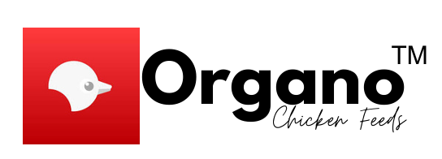

About Us

Technological Innovation
- Precision Agriculture
- Smart Irrigation Systems
- Genetically Modified Crops
Community Engagement
- Supporting Local Farmers
- Offering workshops and resources for farmers
- Engaging in local and global charity initiatives, food donations, and volunteering programs

Core Values
Sustainability | Quality & Excellence | Innovation | Community | Empowerment | Integrity | Diversity in Agriculture | Customer Commitment | Responsibility
Our Mission
To cultivate high-quality agricultural products through sustainable and innovative farming practices, while supporting local communities and preserving Sri Lanka's natural resources
Our Vision
To become a leading and trusted plantation company in Sri Lanka by promoting sustainable agriculture, innovative farming methods, and environmental responsibility. We envision a future where agriculture empowers local communities, creates economic opportunities, preserves natural resources, and contributes to the long-term growth and development of the nation.
Our Commitments to Sustainability
At People's Development Plantation, we are committed to delivering high-quality agricultural products through sustainable and responsible practices. We strive to protect Sri Lanka's natural resources while continuously improving our farming methods across paddy, aloe vera, seafood, and vegetable production.
At People's Development Plantation, we are committed to delivering high-quality agricultural products through sustainable and responsible practices. We strive to protect Sri Lanka's natural resources while continuously improving our farming methods across paddy, aloe vera, seafood, and vegetable production.
At People's Development Plantation, we are committed to delivering high-quality agricultural products through sustainable and responsible practices. We strive to protect Sri Lanka's natural resources while continuously improving our farming methods across paddy, aloe vera, seafood, and vegetable production.
QUALITY ASSURANCE
At People's Development Plantation, quality assurance is at the heart of everything we do. We follow strict standards throughout every stage of production to ensure our agricultural and aquaculture products are safe, fresh, and reliable.
From soil preparation and cultivation to harvesting and distribution, each process is carefully monitored using best farming practices and modern technology. We regularly inspect crops and water systems to maintain optimal growing conditions and prevent contamination.


Research center
Conducting soil tests
We conduct regular soil tests to analyze nutrient levels and soil health, helping us improve crop growth and ensure sustainable and efficient farming practices.
Studying climate impact
We study climate impact to understand weather patterns and environmental changes, helping us adapt farming practices for better yield and sustainability.
Our Partners




Terms & Conditions
Welcome to our website. By accessing and using our services, you agree to comply with the following Terms & Conditions. These terms are designed to ensure a transparent, fair, and beneficial relationship between our company and valued customers.
1. Commitment to Quality
We are committed to maintaining high standards in all plantation, agricultural, and farming activities. While we strive to deliver expected results and services, natural factors such as climate, weather conditions, and market fluctuations may affect agricultural outcomes.2. Investment & Profit Information
Any profit, income, or return figures shared on the website are based on current market estimates and operational performance. Returns may vary depending on agricultural conditions, market demand, and environmental factors.3. Customer Responsibilities
Customers are encouraged to provide accurate information during registrations, inquiries, or investments. Incorrect or misleading information may affect service eligibility or communication.4. Transparency & Communication
We believe in maintaining clear communication with our customers. Updates regarding projects, plantation activities, and investment progress will be shared through official company channels whenever applicable.5. Website Content
All content, images, logos, descriptions, and materials available on this website are the property of the company and are intended solely for informational purposes. Unauthorized copying or misuse is prohibited.6. Agricultural Risks
Agriculture and plantation industries naturally involve certain risks, including environmental changes, crop diseases, market price variations, and unforeseen natural events. Customers acknowledge and understand these possibilities before engaging with our services.7. Payment & Transactions
All payments made to the company should be completed through officially approved methods. Customers are advised to retain transaction records for future reference.8. Service Modifications
Every investment made with the company is subject to a minimum one-year period. Customers are unable to withdraw or refund their investment during this period. However, in case of an emergency, customers may apply for a loan facility of up to 70% of their invested amount.9. Privacy & Data Protection
Customer information will be handled responsibly and used only for business communication, service improvements, and operational purposes. We respect customer privacy and do not intentionally share personal data with unauthorized third parties.10. Acceptance of Terms
By using this website or engaging with our services, customers agree to these Terms & Conditions and acknowledge that they have understood the policies stated above.
Privacy Policy
Welcome to People’s Development Plantation. We value the trust and confidence of our customers, partners, and website visitors. This Privacy Policy explains how we collect, use, protect, and manage your personal information when you use our website and services.
By accessing our website or engaging with our services, you agree to the terms outlined in this Privacy Policy.
1. Information We Collect
We may collect the following types of information:Full name
Contact number
Email address
Residential address
National Identification details (when required)
Payment or transaction information
Information submitted through inquiry or registration forms
We may also collect non-personal information such as browser type, device information, and website usage statistics to improve our services.
2. Purpose of Collecting Information
Customer information is collected for the following purposes:Processing registrations and investments
Providing customer support and communication
Managing plantation and agricultural service operations
Sending updates regarding projects, services, or company announcements
Improving website performance and customer experience
Complying with legal and regulatory requirements in Sri Lanka
3. Protection of Customer Information
We are committed to maintaining the confidentiality and security of customer information. Reasonable administrative, technical, and security measures are implemented to protect personal data from unauthorized access, misuse, loss, or disclosure.4. Sharing of Information
The company does not sell, trade, or intentionally share customer personal information with unauthorized third parties.However, information may be shared when required:
By law or government authorities
For legal compliance and regulatory purposes
With authorized financial or service partners related to company operations
5. Investment & Financial Information
All investment-related information provided by customers will be handled with strict confidentiality. Customers are responsible for ensuring the accuracy of the information submitted to the company.6. Website Cookies & Analytics
Our website may use cookies and analytical tools to improve website functionality, monitor performance, and enhance user experience. Users may disable cookies through their browser settings if preferred.7. Third-Party Links
Our website may contain links to external or third-party websites. The company is not responsible for the privacy practices, content, or policies of those external websites.8. Customer Rights
Customers may request to:Access their personal information
Correct inaccurate information
Update contact details
Request clarification regarding data usage
Requests may be subject to identity verification and applicable legal requirements.
9.Policy Updates
The company reserves the right to modify or update this Privacy Policy at any time without prior notice. Updated versions will be published on the official website.10.Contact Information
For any questions regarding this Privacy Policy or customer information handling, please contact:People’s Development Plantation
Sri Lanka
Email: info@pdp.lk
Phone: +94 71 683 4302
By using our website and services, you acknowledge that you have read, understood, and agreed to this Privacy Policy.